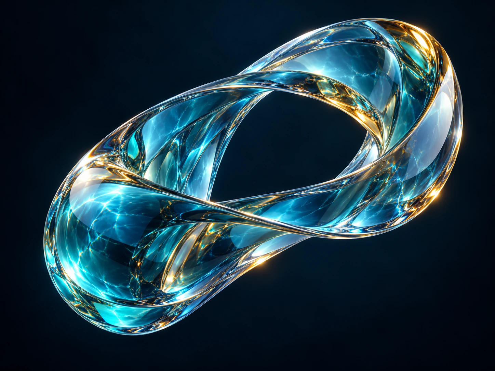
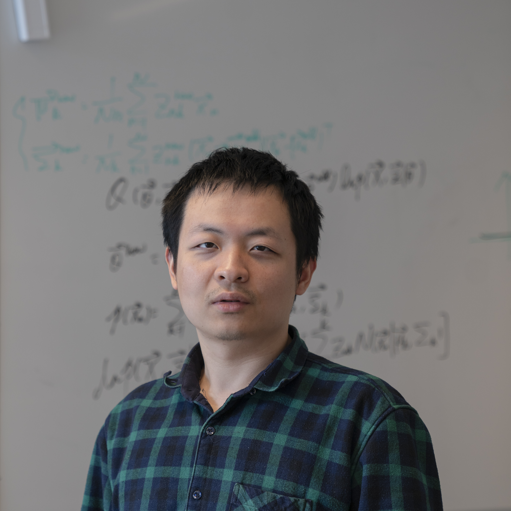

Physics for visual AI
Ground perception, generation, and prediction in the principles that govern the physical world.
IJCV · Special Issue
Grounding Foundation, Generative, and World Models in Physical Principles
A special issue of the
International Journal of Computer Vision

01 / The special issue
Visual AI is entering an era of powerful foundation, generative, and world models. Yet visual plausibility alone does not guarantee physical validity. This special issue explores how the structure of the physical world can ground what models perceive, generate, and predict.
We invite research that connects geometry, illumination, reflectance, materials, optics, sensors, and dynamics with large-scale visual learning. In the complementary direction, learned representations and generative priors can advance inverse problems, reconstruction, rendering, restoration, and computational imaging.
Ground perception, generation, and prediction in the principles that govern the physical world.
Use learned priors to solve imaging and inverse problems while respecting physical measurements.
02 / Research directions
Representative topics, not an exhaustive list. Interdisciplinary contributions are welcome.
Physical priors for visual and vision-language foundation models; geometric and photometric reasoning; robust representations grounded in image formation.
Physically valid image, video, and 3D generation; controllable illumination and materials; generative priors for inverse rendering and reconstruction.
Learning and predicting physical dynamics; consistent scene representations; perception and simulation that support interaction with the physical world.
Sensor-aware learning and acquisition; computational imaging; physically grounded synthetic data; multimodal sensing and measurement consistency.
Measuring physical validity beyond perceptual quality; diagnostic benchmarks, reproducible evaluation, and applications that test robustness and generalization.
03 / Important dates
Two dates for your submission calendar.
Add dates to calendarAccepted articles are published online on a rolling basis. Consult the official collection for any schedule updates.
04 / Call for papers
Open to the research community. Participation in a related workshop is not required.
We seek original research that makes visual intelligence more controllable, robust, interpretable, and physically valid.
Follow the IJCV submission guidelines. State your physical assumptions, explain how physical validity is evaluated, and discuss limitations.
Submit through IJCV Editorial Manager and choose the article type below.
SI: Physics-Inspired Visual AIAll submissions undergo the journal’s peer-review process. Acceptance is based on scientific quality, relevance, and the strength of the contribution.
Special-issue submissions open on 15 January 2027.
05 / Editorial team
Connecting expertise in computer vision, computational imaging, and physically grounded AI.

Utrecht University
National Institute of Informatics
Hangzhou Dianzi University
International Digital Economy Academy (IDEA)
Beijing Institute of Technology
International Digital Economy Academy (IDEA) / University of Illinois Urbana-Champaign
NVIDIA
06 / Get in touch
For questions about scope and submissions,
contact the guest editorial team.